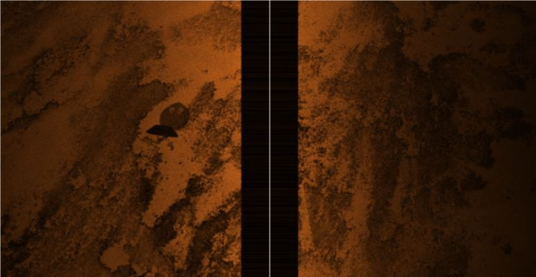

A strategy agent
Builds end-to-end marketing strategies for campaign teams. It pulls together signals from several internal data sources and turns them into recommendations a marketer can act on.
In pilot with internal marketing teams
AI product owner at Verizon, working on agents that help marketers plan campaigns and manage customer journeys.
I came to product from research. Before Verizon I spent most of a year training neural networks to read underwater sonar on a DRDO-funded programme. The habit I brought with me: find out how a model fails before deciding how good it is.
I joined Verizon in September 2025 as a business analyst on the Adobe and Pega marketing stack and became product owner in April 2026. I now own two agents in Verizon's marketing agentic suite. Most of my time goes into discovery, deciding what good output looks like, and turning pilot feedback into what we build next.
Builds end-to-end marketing strategies for campaign teams. It pulls together signals from several internal data sources and turns them into recommendations a marketer can act on.
In pilot with internal marketing teams
Works with Adobe Journey Optimizer. Marketers can see which customer journeys are live, understand what each one is doing, and change a journey by asking for it in plain language.
In pilot with internal marketing teams
An agent gives a slightly different answer every time you ask, so one passing test doesn't tell you much. Every change goes through the same two checks before pilot users see it.
The suite works across Adobe Journey Optimizer, Adobe Experience Platform, Marketo Engage and Pega Customer Decision Hub.
Dec 2024 to Aug 2025. Junior research fellow at SRM Institute of Science and Technology on a DRDO-funded programme for classifying objects in underwater sonar, with the Department of Ocean Engineering at IIT Madras.

In side-scan sonar an object shows up twice: a bright return where sound bounces off it, and a dark acoustic shadow behind it where sound can't reach. The shadow often says more about an object's shape, but it's also the part noise destroys first. Our model reads both regions and learns, image by image, how much weight to give each.
| Context-adaptive fusion (our model) | 96.75% |
|---|---|
| Shadow and highlight classifier | 92.18% |
| Shadow-only classifier | 85.98% |
Anna University (Peri Institute of Technology), Chennai
Requirements analysis, SQL data validation and UAT support on SAP BRIM billing and subscription systems, plus Power BI reporting.
SRM Institute of Science and Technology, Chennai
Deep learning for underwater sonar on a DRDO-funded programme. Two peer-reviewed papers.
Requirements and SQL validation for personalisation, journey orchestration and next-best-action features on Adobe Journey Optimizer, Marketo Engage and Pega.
Two agents in Verizon's marketing agentic suite, in pilot with internal marketing teams.
Or write directly: balasubramanian120@gmail.com